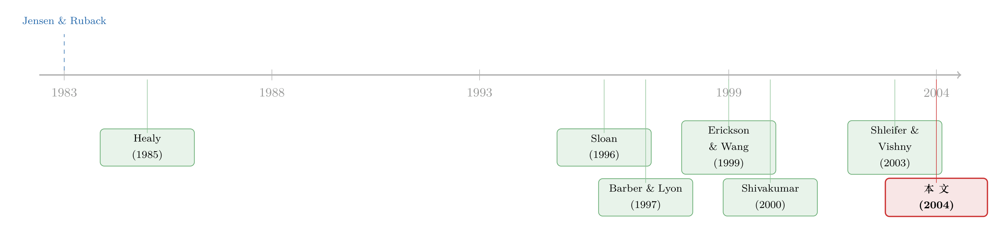

财报里那点「虚」，藏在并购方三年后的股价里
本文读的是 Henock Louis (2004, Journal of Financial Economics)：用股票换股票去并购的公司，往往在宣告前一个季度悄悄「做高」了利润；市场虽然在宣告时打了折扣，却没能把这层水分完全挤干，于是剩下的那一截在并购之后慢慢反转——这恰恰解释了困扰金融学几十年的「并购方长期跑输」之谜。
1 一桩悬而未决的旧案
先抛一个老问题：为什么收购方在并购完成之后，会持续跑输市场好几年？
这不是什么边角料。Jensen and Ruback (1983) 在那篇著名的综述里早就把话挑明了——并购「结束之后的负向异常收益令人不安，因为它与市场有效性相悖，并暗示并购过程中的股价变动高估了未来的效率收益」。换句话说，要么市场在并购当口太乐观、事后慢慢醒悟；要么我们的模型漏掉了什么。几十年来，从 Asquith (1983) 到 Agrawal, Jaffe and Mandelker (1992) 再到 Rau and Vermaelen (1998)，一连串研究把这个「长期表现不佳」反复证实，却始终没给出一个让人信服的机制。
本文作者 Henock Louis 给出的答案，朴素得近乎刻薄：所谓的长期跑输，有相当一部分根本不是什么深刻的效率故事，而是一笔会计账的「水分」在事后退潮。
要理解这个反转，得先想清楚一件事：当一家公司决定用自己的股票去换购另一家公司，它的管理层有什么动机？
2 一个再自然不过的动机
答案显而易见。如果你打算拿自家股票当「货币」去支付，那么这只「货币」越值钱，你付出的真实代价就越小。于是，一旦决定用换股 (stock swap) 方式并购，管理层就有强烈的动机在宣告前把报告利润做高，借此推高股价。
这正是 Erickson and Wang (1999) 的洞见。他们更进一步：市场其实预期到换股的公司会粉饰利润，因此无论你做没做，市场都会在宣告时给你的股价打个折。既然横竖都要被打折，理性的收购方的最优反应，就是干脆把利润管理到底。Louis 在数据里复现了这一点——收购方在换股宣告前的那个季度，确实存在显著为正的异常应计 (abnormal accruals)。
接着，一个自然的问题是：市场到底把这层水分挤干了多少？
这才是全篇真正的分水岭，也是 Louis 与前人分道扬镳的地方。
3 关键的一步：市场「挤」不干净
Shivakumar (2000) 研究的是季节性增发 (seasoned equity offering, SEO)。他发现，在增发宣告时，市场会完全抵消盈余管理的影响——发行后的长期表现与发行前的可裁量应计 (discretionary accruals) 之间，没有显著相关。他的结论很干脆：市场在宣告当口就把盈余管理彻底「undo」掉了。
Louis 不买账。他的反驳有两层，都很有说服力：
第一，市场凭什么能挤干净？ 要完全抵消盈余管理，投资者得能观察到管理层的实际操作，或者至少完全理解他们的操纵空间和所有门道。可管理层粉饰利润的手法多到数不清，市场根本不可能精确地知道每一家究竟注了多少水。文中举的例子触目惊心：连 Citigroup、Bank of America 这样最老练的债权人，都曾在 KPNQwest 破产前三个月借出 9.05 亿美元；Enron、WorldCom 更是把整个市场都骗了。如果连这些「concentrated claimholders」都会被盈余管理蒙住，散户凭什么能？
第二，并购和 SEO 不是一回事。 SEO 只关乎发行人自己，而并购是收购方与目标方谈判的结果。谈判就意味着信息会提前泄露——Schwert (1996) 早就证明，目标公司的股价在并购宣告前 21 个交易日就开始显著「跑赢」。所以在并购里，股价调整往往在宣告前数周的「传闻期」就已经启动。
这第二点直接改写了实证设计。如果只看宣告日附近的 [-1,+1] 三天窗口，Louis 发现异常收益与收购方的异常应计并不显著负相关——表面上和 Shivakumar 矛盾。但一旦把事件窗口往前拉到宣告前 21 天（[-21,+1]），异常应计与异常收益的相关性就变得显著为负了。也就是说，市场的「打折」动作，早在传闻期就悄悄开始了。
这是个方法论上的小陷阱：用错了事件窗口，你会得出「市场毫无反应」的错误结论。消息泄露越严重的市场，越要把窗口前移。
4 用一个算例把逻辑钉死
Louis 用了一个极简的算例，把全篇的核心逻辑一次性讲透。这个算例值得逐字复盘：
假设 A 公司通过盈余管理把自己的价值吹高了 6%，B 公司吹高了 14%。投资者看不到管理层的动作。但退一万步，假设市场能形成无偏的估计，于是在宣告时对每家公司一律打 10% 的折扣（这是平均的注水幅度）。
在这个情形下会发生什么？宣告时的异常收益 (AR) 和盈余管理 (EM) 之间不相关——因为人人都被打了同样的 10%，差异被抹平了，只剩一个由回归截距捕捉的「平均效应」。
但并购之后呢？当盈余管理反转、或者管理层主动压低市场预期时，在其他条件不变下，A 公司的价值会回升 4%（被多打了折），B 公司的价值会再跌 4%（折打少了）。于是——
盈余管理与并购后表现之间，出现了负相关。
这一步是全篇的灵魂：哪怕市场的估计平均而言是对的（这个假设本身就很勉强），只要市场不知道每一家具体注了多少水，并购后就一定会观察到盈余管理与长期表现的负相关。长期跑输，于是成了一道近乎机械的算术题。
5 识别策略：怎么把「水分」量出来
把逻辑讲清之后，真正的硬功夫在于度量。Louis 的实证骨架由三块拼成。
第一块，短期反应回归。 他把市场对并购宣告的反应建模为：
$$\text{ABRET}_i = \sum_{s=0}^{1}\left(\alpha_{0,s} + \alpha_{1,s}\,\text{ABCA}_{i,s}\right) + e_i$$
其中 ABRET 是收购方的异常收益，ABCA 是异常流动应计，作为盈余管理的代理变量；s 是个 0/1 哑变量，现金收购取 0、换股取 1。对最核心的这个方程，把各部分拆开看：
异常收益用市场模型估计，市场组合用 CRSP 等权收益，估计窗口取宣告前 60 至 259 天。两个核心假设是：
$$H1:\ \alpha_{11} < 0$$
$$H2:\ \alpha_{11} - \alpha_{10} < 0$$
直白说：换股组的斜率 α₁₁ 应为负（盈余管理越多、市场打折越狠），而且要比现金组的斜率 α₁₀ 更负（现金收购没有用股票当货币的动机，盈余管理不该被同等惩罚）。
第二块，盈余管理怎么估。 Louis 没有用容易出错的总应计，而是跟着 Healy (1985) 的逻辑——折旧这类长期应计占总应计的变动其实很小、也难操纵，而投行给并购标的估值时更看 EBITDA——所以他用流动应计。借鉴 Guenther (1994) 和 Teoh, Welch and Wong (1998a, b)，对每个两位 SIC 行业估计：
$$\text{CA}_i = \sum_{j=1}^{4}\alpha_j Q_j + \sum_{t=1992}^{2000}\beta_t Y_t + \lambda_i\left(\Delta\text{SALES} - \Delta\text{AR}\right) + e_i$$
这里 CA 是流动应计，Q 是季度哑变量，Y 是年度哑变量，ΔSALES 是销售额变动，ΔAR 是应收账款变动（用「销售减应收」剔除掉可由真实经营解释的那部分）。更关键的是，他遵循 Kothari, Leone and Wasley (2004) 的告诫——不做业绩调整的可裁量应计会系统性地偏向「拒绝无盈余管理」的原假设——于是按前一年 ROA 五分位 × 行业匹配组合，把组合的平均应计减掉，得到「业绩调整后」的异常应计。Kothari 等人的原话很重：不这么做的研究者「得出的推断往好里说不可靠，往坏里说就是错的」。
第三块，长期表现怎么量。 早年那些「市场调整」「组合调整」法被 Barber and Lyon (1997) 和 Kothari and Warner (1997) 批为「概念上有缺陷、或导致有偏的检验统计量」。Louis 改用 Barber and Lyon (1997) 的匹配公司买入持有收益法：对每个收购方，从市值在其 70%–130% 区间的公司里，挑账面市值比 (book-to-market) 最接近的那一家做对照，用一年、两年、三年的买入持有收益之差衡量长期异常表现。
6 数据与主要结果
样本是 1992 年 1 月至 2000 年 12 月间宣告的美国上市公司并购。计算应计与长期收益相关性时，换股样本的规模在 125 到 219 之间。
结果落地得很干脆：
- 换股收购方在宣告前一季显著做高利润——异常应计显著为正，与 Erickson and Wang (1999) 一致。
- 预宣告的反转只是「部分」完成——市场在传闻期就开始打折，但没挤干净。
- 换股收购方在并购后三年显著跑输现金收购方；更重要的是，异常应计与长期异常收益之间显著负相关，而这正是算例预言的机械反转。
- 分析师没能及时识破。 在并购宣告后的紧接一个月内，分析师的预期里没有充分反映这层反转；但到了随后的季度财报发布时，反转效应已经体现在分析师的共识预期中了——这与财经媒体一再指出的「管理层会把分析师预期引导到容易『beat』的水平」相吻合（cf. Fox, 1997; Bartov, Givoly and Hayn, 2002）。
值得一提的是，Louis 特意把自己和 Sloan (1996) 的应计异象划清界限。Sloan 用了 40,679 个全样本观测，发现应计与长期收益普遍负相关。但 Louis（与 Chen and Cheng, 2004 一致）指出，应计效应并不普遍，它与应计背后的动机绑定：用相同的模型，应计变量的系数在换股收购方那里为负，在现金收购方那里却为正。换言之，重要的不是「应计高」，而是「为什么应计高」。
7 文献脉络
把这条线索捋一遍，能看清本文站在哪。
最早，Jensen and Ruback (1983) 把并购后长期跑输钉成了一个挑战市场有效性的「异象」。会计这一侧，Healy (1985) 奠定了用应计研究盈余管理的传统，Sloan (1996) 则发现了著名的应计异象。方法论上，Barber and Lyon (1997) 把长期异常收益的度量重新做对。
真正把「盈余管理」与「发行/并购后跑输」接上的，是 Teoh, Welch and Wong (1998a, b) 对 SEO 与 IPO 的研究，以及 Erickson and Wang (1999) 对换股收购方的直接证据。Shivakumar (2000) 抛出了一个强命题——市场在 SEO 宣告时完全抵消盈余管理。本文正是对这一命题的并购版「反驳与修正」：市场挤不干净，剩水在事后反转。与此同时，Shleifer and Vishny (2003) 的「股市驱动型并购」理论，为「目标方为何愿意接受被高估的股票」提供了行为基础。

于是，Louis (2004) 的位置就清楚了：它不是又一篇「发现异象」的论文，而是给一个老异象提供了一个可检验、可量化的会计机制。（关于并购方长期表现这条线，亦可参见《「机构持股越多，并购做得越好」——可这真的是监管的功劳吗？》；关于如何更干净地度量并购创造的价值，可参见《do-tender-offers-create-value》。）
8 评论与延伸（Q&A + 研究方向）
(a) 几个可能的疑问
Q：这和 Sloan (1996) 的应计异象到底有什么不同？
Sloan 说的是「应计高 → 未来收益低」对所有公司普遍成立。Louis 说不普遍：换股收购方系数为负、现金收购方系数为正，关键在于应计背后有没有「用股票当货币」的动机。所以这是「动机驱动的应计反转」，而非全样本的应计异象。
Q：和 Shivakumar (2000) 矛盾吗？
不完全矛盾，而是修正。Shivakumar 认为市场在 SEO 宣告时完全抵消盈余管理；Louis 认为在并购里市场只是部分抵消，且因为消息泄露，抵消动作提前到传闻期。用对了
[-21,+1]窗口，两人的「负相关」其实殊途同归，只是 Louis 强调剩水会在事后继续反转。
Q：异常应计真能代表「盈余管理」吗？会不会只是真实经营变化？
这是最大的软肋。Louis 用流动应计、剔除「销售减应收」、再按 ROA×行业做业绩调整（Kothari et al., 2004），都是为了把真实经营的成分压下去。但应计模型本身仍是噪声很大的代理，无法直接观测管理层意图——这点作者也承认。
Q：那个「平均打 10% 折扣」的算例，假设是不是太强了？
恰恰相反，作者用它是为了示弱：哪怕给市场最大的善意（估计无偏），只要市场不知道每家具体注了多少水，负相关就一定出现。现实中市场估计很可能有偏，结论只会更强，不会更弱。
Q：为什么分析师一个月内没识破，季度财报时却反映了？
因为管理层会主动「引导」预期。为了避免报出负向盈余意外，他们在季报发布前把分析师预期压到「beatable」的水平。所以反转不是被分析师独立识破的，而是被管理层主动「喂」进了共识预期。
Q：换股 vs 现金，会不会本身就是内生选择？
会。会选择换股的公司，可能本就股价被高估、或基本面更差。Louis 用控制变量（溢价、相对规模、账面市值比、行业相关性、CEO 持股、董事会规模与独立性、会计处理方法）去吸收一部分，但「支付方式的自选择」始终是悬在头上的识别隐患。
(b) 几个可能的研究问题与提案
1. 把这套逻辑搬到公司债 / 信用市场。
- 【经济故事】换股并购里收购方做高利润，会不会同时影响其债券定价？债权人比股东更老练，理论上更难被盈余管理蒙住——若债市的反转弱于股市，恰好能度量「谁更聪明」。
- 【可行性】中。需要 TRACE 并购方债券成交 + 应计数据，识别上可比较同一发行人股票与债券对异常应计的反应差异。doable，但需处理债券流动性噪声。
2. 盈余管理与并购方债券流动性。
- 【经济故事】信息不对称越大，做市商面临的逆向选择越严重，买卖价差应越宽。换股前的盈余管理是否在宣告前后系统性地推宽了收购方债券的价差？
- 【可行性】中。TRACE + Roll/Amihud 类流动性度量 + 异常应计，事件研究框架。识别清晰但需控制并购本身的不确定性冲击。
3. 外资持有人是否被盈余管理「多骗」？ - 【经济故事】Louis 强调连老练投资者都会被骗。若外资股东信息劣势更大，是否在换股并购后承担了更大比例的反转损失？ - 【可行性】低到中。需要持股层面的外资数据（如 13F 难以区分国籍，须用更细的国别持股库），识别难度高，但若能找到外资持股骤变的外生事件会很有意思。
4. 现代场景下机制是否仍在。 - 【经济故事】2004 年后 SOX、公允价值会计、分析师监管都收紧了。在 2005–2020 的样本里，换股收购方的盈余管理—反转链条是否被削弱？ - 【可行性】高。直接延展样本期、用同一套 Kothari et al. (2004) 调整应计即可复现，是一个干净的「制度变迁削弱异象」检验。
5. 真实活动盈余管理 vs 应计盈余管理。 - 【经济故事】SOX 之后管理层更多转向「真实活动操纵」（如压库存、削研发）。换股收购方是否从应计操纵转向真实操纵？反转的可观测性会因此下降吗？ - 【可行性】中。用 Roychowdhury 式真实活动度量替换应计，对比两类操纵在并购样本中的相对强度。数据可得，难点在两类度量都含噪声。
9 我的判断
这篇论文的贡献在于用一个简单到近乎不可辩驳的算例，把「并购方长期跑输」这个老异象，从模糊的「市场过度乐观」拉回到一个可量化的会计机制：市场对盈余管理的纠正不完全，剩水在事后反转。它最漂亮的地方不是某个系数，而是那个算例的逻辑韧性——哪怕假设市场无偏，结论依然成立。
但识别上的担忧也实打实。其一，异常应计是个噪声很大的代理，「盈余管理」与「真实经营变化」难以彻底分离；其二，支付方式（换股 vs 现金）的自选择无法用控制变量根除，换股组与现金组在很多维度上本就不可比；其三，125–219 的样本规模不大，长期买入持有收益的检验统计量本就以「肥尾、偏态」著称，单侧结论需谨慎。
我最想看到的后续，是把债券与股票放在同一发行人身上做对照——如果债权人确实更难被骗，那「谁吃下了反转损失」这个分配问题，比「反转存在与否」更有意思。
参考文献
- Agrawal, A., Jaffe, J., Mandelker, G. (1992). The post-merger performance of acquiring firms: a re-examination of an anomaly. Journal of Finance 47, 1605–1621.
- Barber, R., Lyon, J. (1997). Detecting long-run abnormal stock returns: the empirical power and specifications of test statistics. Journal of Financial Economics 43, 341–372.
- Bartov, E., Givoly, D., Hayn, C. (2002). The rewards to meeting or beating earnings expectations. Journal of Accounting and Economics 31, 173–204.
- Erickson, M., Wang, S. (1999). Earnings management by acquiring firms in stock for stock mergers. Journal of Accounting and Economics 27, 149–176.
- Guenther, D. (1994). Earnings management in response to corporate tax rate changes: evidence from the 1986 tax reform act. Accounting Review 69, 230–243.
- Healy, P. (1985). The effect of bonus schemes on accounting decisions. Journal of Accounting and Economics 7, 448–467.
- Jensen, M., Ruback, R. (1983). The market for corporate control: the scientific evidence. Journal of Financial Economics 11, 5–50.
- Kothari, S., Leone, A., Wasley, C. (2004). Performance matched discretionary accrual measures. Journal of Accounting and Economics, forthcoming.
- Kothari, S., Warner, J. (1997). Measuring long-horizon security price performance. Journal of Financial Economics 43, 301–339.
- Louis, H. (2004). Earnings management and the market performance of acquiring firms. Journal of Financial Economics 74(1), 121–148.
- Rau, P., Vermaelen, T. (1998). Glamour, value, and the post-acquisition performance of acquiring firms. Journal of Financial Economics 49, 223–253.
- Schwert, G. (1996). Markup pricing in mergers and acquisitions. Journal of Financial Economics 41, 153–192.
- Shivakumar, L. (2000). Do firms mislead investors by overstating earnings around seasoned equity offerings? Journal of Accounting and Economics 29, 339–371.
- Shleifer, A., Vishny, R. (2003). Stock market driven acquisitions. Journal of Financial Economics 70, 295–311.
- Sloan, R. (1996). Do stock prices fully reflect information in accruals and cash flows about future earnings? Accounting Review 77, 289–315.
- Teoh, S., Welch, I., Wong, T. (1998a). Earnings management and the long-run underperformance of seasoned equity offerings. Journal of Financial Economics 50, 63–100.
- Teoh, S., Welch, I., Wong, T. (1998b). Earnings management and the long-run underperformance of initial public equity offerings. Journal of Finance 53, 1935–1974.